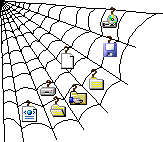

|
 IntroductionWebFileSys is a web based file manager, web picture album and web calendar/reminder. It runs as a standard Java web application in any servlet container. Although WebFileSys is a platform-independent Java application, it offers most functions that file managers designed for a single operating system provide. A rich set of picture browsing and manipulation functions as well as the Google Maps and Google Earth integration make it a good choice for sharing photos on the intranet or internet. WebFileSys can be used by webspace providers to give the users convenient access to their files. If installed on a server accessible from the internet, it can be used as a private cloud. WebFileSys is a multi-user application, each user can have it's own home directory. WebFileSys does not need any external database. All persistent information is stored in cached XML files. WebFileSys is consistently using UTF-8 character encoding to ensure optimum support for different languages. The highly optimized folder and file browsing functions based on Ajax technology make WebFileSys one of the fastest web file managers available.New in release 2.33.0 (08 Nov 2026)Code migrated from javax to jakarta. WebFileSys now requires tomcat 10 and Java 17.Users and SecurityWebFileSys can be run in open registration mode (self-registration for new users allowed) or in closed registration mode (only an admin user can create new accounts).Self-registration is a two step process. After the new user has filled the registration form, an e-mail containing an activation link is sent to the given e-mail address. After the user has klicked on the activation link, the account is ready for login. WebFileSys users can be assigned to one of the roles admin, user and webspace with different access rights and functions available. Self-registered users are always assigned to role webspace. For each user a read/write and a read-only password can be defined. User data are stored in a cached XML file and the passwords are encrypted. Experienced Java programmers can replace the default XML-based user manager by a self-written user manager class to access an existing user database. An alternative user manager for authentication against a LDAP directory is contained in the distribution. For secure access to WebFileSys via HTTPS the servlet container or the web server must be configured to use the SSL protocol. Software RequirementsWebFileSys is a standard Java web application and should run in any servlet container using JDK 1.6 or higher.Most extensive tests have been performed on the Apache tomcat servlet engine. Other servlet containers on which WebFileSys has been run successfully are glassfish, jetty and IBM WebSphere. To be able to use the video functions an installation of the ffmpeg program is required on the machine that runs the WebFileSys server. On client side the following browsers are supported:
The following features must be enabled in the browser configuration:
The browser must be configured to allow popup windows for the WebFileSys server, which is not default in most browsers. File and Directory Management FunctionsWebFileSys offers a rich set of functions to manage folders and files. See a nearly complete list of available functions under FeaturesSearch FunctionsWebFileSys can search directory trees for files matching a given filename pattern and/or containing a search phrase (full text search). The search can also include attached meta information (descriptions).The search can be restricted to files within a given modification date range. Searching for files assigned to a certain category is possible too. BookmarksLost in the deepness of the filesystem tree? Save the path to important folders as bookmarks. The bookmark button in the menu bar opens the bookmark list and with a single mouse click you can navigate back for example to a subfolder where your important configuration files reside. Bookmarked folders are also included in the reduced fastpath folder tree.Fastpath functionWebFileSys remembers the directories that the user has visited.The fastpath function shows a reduced folder tree containing only these recently visted directories plus bookmarked folders for quick navigation. StatisticsWebFileSys can determine various statistical data about a directory tree and display it as graphical charts, for example as a sunburst diagram.The optional download statistic function counts the downloads of each file. Attaching meta information to files and directoriesWebFileSys allows to attach meta information to files and directories, for example a description for a picture or comments about the contents of a directory.Meta information is displayed as headline or as title text of images. The meta information is stored in a cached XML file in the same directory where the file resides. If a file or directory with existing meta information is copied or moved by WebFileSys, the meta information is moved together with the file/folder. Special Picture FunctionsWebFileSys provides a thumbnail view of all image files (JPEG, GIF, PNG and BMP) in the current directory.Optionally WebFileSys can automatically create and store thumbnail files for large images, which are used instead of the original files for the thumbnail view (to optimize performance). Thumbnails are automatically garbage-collected if the original image has been deleted. The automatic or manual slideshow function shows pictures scaled to fit on the screen. WebFileSys can convert images between the formats JPEG, GIF and PNG. Resizing of pictures is supported. Lossless JPEG image transformation (rotation, mirroring) is provided using the MediaUtil framework. A copyright text can be stamped on the image. Pictures can be cropped. WebFileSys can create a "picture story" showing the pictures of a folder side by side with their associated description text. For JPEG pictures produced by digital cameras the camera meta data (called EXIF data) can be displayed, including for example date of exposure, apperture, flash used or not, GPS location data and many more. JPEG picture files from digicams can be renamed to the exposure date. Sharing FoldersWebFileSys provides functions for sharing folders as directory/file tree or as picture album. An invitation containing a link with access code can be sent via e-mail to the visitors. The access to the published folder can be time-limited. Visitors can be allowed to add comments. The picture rating function makes WebFileSys a good platform for photo contests.Geotagging and maps integrationA geographic location can be assigned to picture files. The location can be selected on a Google Maps window. Visitors of the picture album can view the assigned location on various map types, for example Open Street Maps and Google Maps.Blogs and DiariesThe blog and diary functions have been moved to the new sister project arcoiris blog.MP3 music file supportWebFileSys allows to view and edit the MP3 Tags of MP3 music files. Information stored in MP3 tags include title, artist, album, year of publishing, genre and additional comments.Optionally WebFileSys can automatically extract MP3 tag information from all MP3 files found in the folders browsed by the user. The MP3 tag info is stored as meta information (description) of the file. Folder SynchronizationThe folder synchronisation function can be used to make incremental backups of folders or simply for keeping the contents of two folders in snyc.DiffTreeThe DiffTree function shows a reduced folder tree containing only changed subfolders and files. This is a great way to visualize the differences between to folder trees. A good usage example for the DiffTree is to show which parts of the source code of a software development project have changed between two releases.Comparing FilesThe differences of two text files can be determined and are shown in a 3 column window side by side.Folder Backup via FTPWebFileSys has a built-in FTP client to allow the backup of folder trees to a FTP server.Folder Watch FunctionThe user can select folders to be watched for changes by WebFileSys. If files or subdirectories in the watched folder are created, changed or deleted, WebFileSys will send a notification e-mail.E-mail NotificationWebFileSys can send e-mails via a SMTP server to notify administrators of certain events, for example successful user self-registration and failed login attempts.Disk quota supportFor users of role webspace WebFileSys provides an optional disk quota checking.For each user the administrator can specify the maximum allowed size of the files in the folder tree below the user's home directory. Disk quota checking runs once a day as a low-priority background process. In case of exceeded disk quota the user and the administrator can optionally be notified by e-mail. Custom View HandlersWebFileSys provides an interface to plug in view handlers for special file types. Some view handlers are included in the WebFileSys distribution, for example a log file viewer, a Java source code viewer, a JSON data viewer, a viewer for Java keystore and certificate files and a viewer for GPX files containing GPS tracks (includes Diagrams and shows the track on a Google Map). View Handlers can operate on files contained in ZIP archives without extracting the files first.WebCalendar/ReminderWebFileSys features a WebCalender with a stylish circular presentation of the year and the month. Appointments can be stored and the reminder function notifies the user.Mobile GUIWebFileSys offers a special frontend for mobile devices. The pages of the mobile GUI are optimized for small touch screens.Customization of the user interfaceMost parts of the WebFileSys user interface are generated via XSL transformation from XML data. By customizing the XSL stylesheets the resulting HTML pages can be changed to fit into a given corporate design or to match the design of an existing web site.Layout Customization with CSSThe appearance of the user interface can be customized by CSS stylesheet files. You can change colors, background colors and fonts of most parts of the WebFileSys user interface.Each user can be assigned one of the available CSS stylesheets. LDAP AutenticationWebFileSys provides an alternative user manager which authenticates users against a LDAP directory, while the WebFileSys-specific user data are stored in the default WebFileSys user database (cached XML file). WebFileSys can use a SSL(TLS)-secured connection to the LDAP server, which is recommended.Included software from other authorsThe MediaUtil framework (http://mediachest.sourceforge.net/mediautil) written by Dmitriy Rogatkin and Suresh Mahalingam is used for lossless JPEG image transformation.A library from Drew Noakes called ExifExtractor is used to extract EXIF data from digicam pictures. XML and XSLT libraries from the Apache projects Xerces and Xalan are used. The libraries have been re-packaged to reduce the size of the WebFileSys download. The Apache Commons net library is used for FTP client support. The GifEncoder from the ACME library (http://www.acme.com/java) is used to write GIF images. The NEUQUANT Neural-Net quantization algorithm by Anthony Dekker is being used for color quantization in GIF image creation. WebFileSys uses the datepicker from the jQuery UI project (https://jqueryui.com). Browsers that do not support XSLT or have no Javascript interface to the XSLT engine are using the Google Javascript XSLT library ajaxslt for partial page rendering. WebFileSys uses the Google Maps API to select and display geographic location data for pictures and folders. The Java source file viewer is based on the Java2Html converter written by Markus Gebhard (http://www.java2html.de/). TAR archives are managed using the Java Tar Package written by Tim Endres (http://www.trustice.com). The diff algorithm written by Neil Fraser at Google is used for finding the differences between two files in the compare function. The LZC implementation from Igor Gatis hosted at google code (http://code.google.com/p/compress-j2me) is used for compress/uncompress functions. The color picker script jscolor written by Jan Odvarko (http://jscolor.com) is used to select folder text colors. The icon font from Font Awesome (http://fortawesome.github.io/Font-Awesome) is included. Spanish translation contributed by Miguel Sanz. Sample ViewHandler for stamping a PDF document with userid contributed by Leonardo F. Cardoso. LicenseWebFileSys is licensed under the GPL V3.The author gives no warranty at all! Use the program at your own risk. The author asks you to register your copy of WebFileSys for free by sending an e-mail to the address given under Contact. Please include information about the platform (operating system, servlet container) you are using as WebFileSys server, the version of WebFileSys you run, and the purpose you are using it for. Echinopsis hybrids |